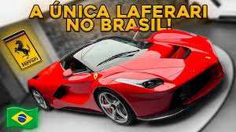
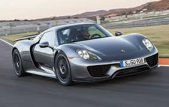
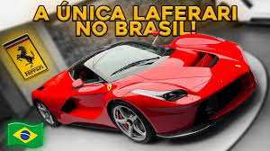
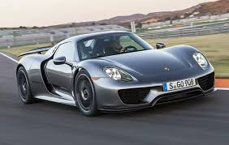

Os carros esportivos são conhecidos por sua velocidade e desempenho. Eles são projetados para serem rápidos e ágeis, com motores potentes e suspensões esportivas. Muitos carros esportivos também têm designs aerodinâmicos, que os ajudam a cortar o ar e alcançar velocidades mais altas.
Um dos carros esportivos mais famosos é o Porsche 911, nesta versão da foto, o GT3 RS. Ele é conhecido por sua forma clássica e seu desempenho impressionante. O GT3 é um dos carros esportivos mais vendidos do mundo e é considerado um ícone do design automobilístico.
Outro carro esportivo popular é a Ferrari 812 GTS. Ela é conhecida por sua velocidade e seu design agressivo. A 812 conta com um motor V12 de 800 cavalos e um torque de 73,2 kgfm. É considerada um símbolo para os amantes de carros.
No ano passado, um entusiasta de carros anônimo comprou um Bugatti Chiron Sport no exterior e importou para o Brasil, com custo em torno de 60 milhões de reais. Atualmente, é o único Chiron do Brasil. O carro possui um motor W16 de 16 litros. Para os gearheads, esse carro foi uma verdadeira vitória.
Atualmente, a comunidade dos amantes de carros cresce cada vez mais no Brasil. Júnior, dono do Chiron, também possui a LaFerrari, um ícone da marca, além da McLaren P1 e do Porsche 918 Spyder. Esses três compõem a chamada Santíssima Trindade do mundo automotivo.
Em resumo, os carros esportivos são veículos incríveis que oferecem velocidade, desempenho e estilo. Projetados para serem rápidos e ágeis, são extremamente populares em todo o mundo. Se você é fã de carros esportivos, certamente encontrará um modelo que combine com seu estilo.
 


